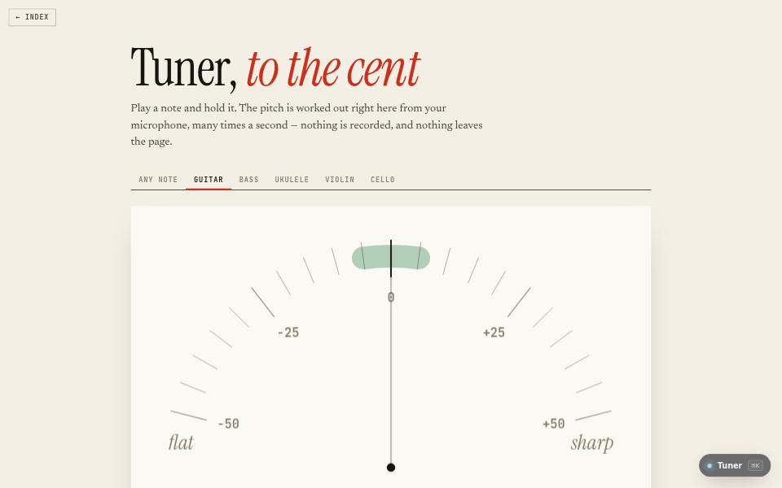

app · about 2 min · The Workshop Shallows
Tuner
Play a note into your microphone and see how sharp or flat it is, to the cent. Guitar, bass, ukulele, violin or cello.

The problem
Pitch detection that works on real instruments, not just pure tones.
What it does
- Guitar, bass, ukulele, violin or cello
- Reads pitch to the cent from your microphone
- An out-of-tune string on the page if you have no microphone
The most interesting decision
Look for the period, not the loudest frequency
A real string’s fundamental is often its quietest part, so picking the loudest frequency reads an octave high. YIN finds the shift at which the waveform lines up with itself.
Built with
- YIN pitch detection
- Microphone via Web Audio
- Canvas 2D
Evidence
No microphone? There is an out-of-tune string on the page to fix. Read its tests
Its world
A tuning fork tower, humming slightly flat.